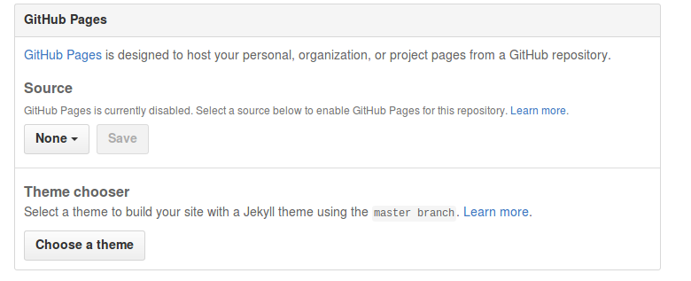
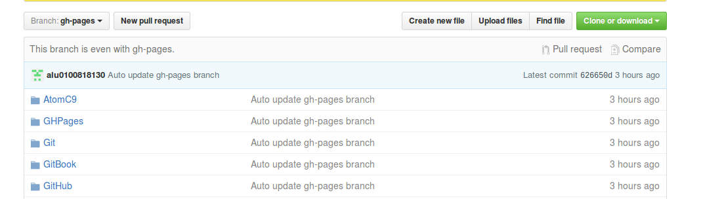

GHPages
¿Qué es GH-Pages?
GH-Pages es una forma rápida de publicar tu propia página web desde github, utilizando sus herramientas.
Utilización
Para utilizar gh-pages, hay varios métodos:
Crear una rama gh-pages de forma local y dentro de la misma poner el contenido que deseas mostrar en tu página web. Github se encargará de forma automática de identificar el contenido de la rama. Para crear la rama gh-pages y movernos a ella ejecutamos los comandos:
$ git branch gh-pages$ git checkout gh-pagesAccediendo a la web de GH-Pages y siguiendo las instrucciones que se indican.
Desde la web de github y dentro de tu repositorio vas a:
- La pestaña de Settings.
- La zona de GH-Pages y seleccionamos el Source: 
Al final deberíamos tener una rama GH-Pages como esta:

Se puede usar el plugin de gulp para automatizar la subida al gh-pages